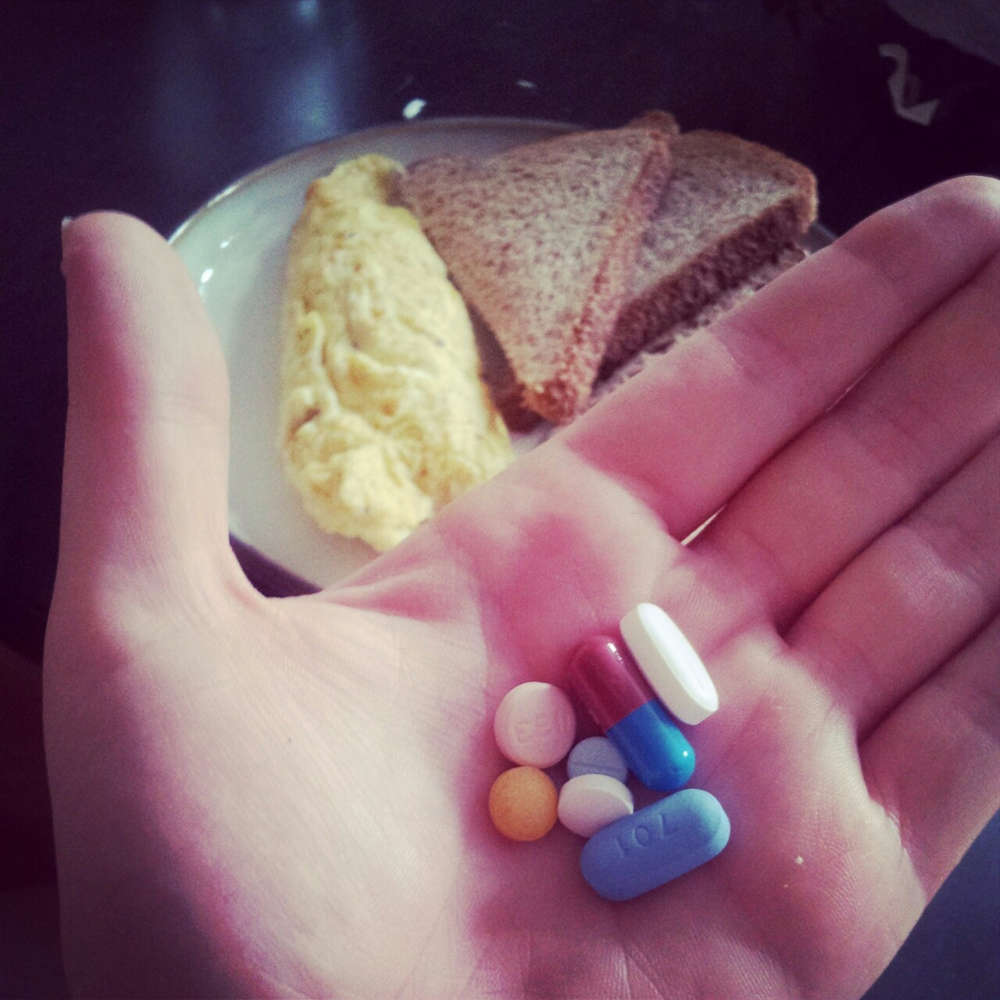
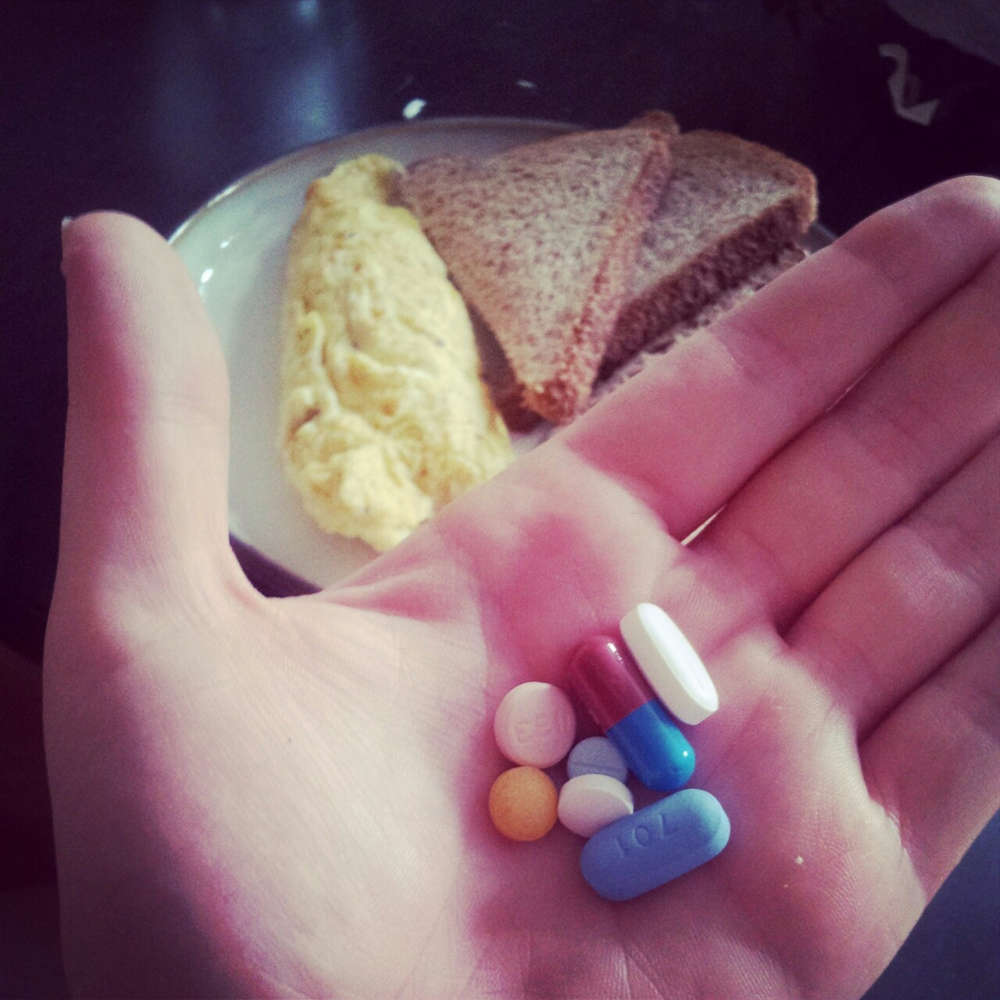

mmm, breakfast! #livingwithhiv
HAPPY PRIDE

mmm, breakfast! #livingwithhiv
HAPPY PRIDE
My Thing Is: The black community is often accused of being closed-minded, but my experience has been the opposite. Thanks to the overwhelming support of friends, family and mentors, I’m happily working on being the best me I can be.
PRAISE
the philly trans health con was awesome because i spent three days hanging out with rad trans ladies and trans folks from the west coast who i haven’t seen in a while - and i drank more than a pint of whiskey each day. but the con itself was a little…
ok, so like at the health and fitness one, two dudes talked about how easy it is to work out. when my friend spoke up about how gyms are expensive and leaving the house means getting harassed big time, this man literally and unjokingly suggested that she could work out by vacuuming her house. so like, it was kinda like that.
1) dat friend was me!
2) THE STRUGGLE IS REAL
3) my HIV allyship workshop went really well tho! i was shocked at how many people turned out at 8:30am to have a participatory, nuanced, and in-depth discussion about the critical realities of people living with HIV/AIDS.